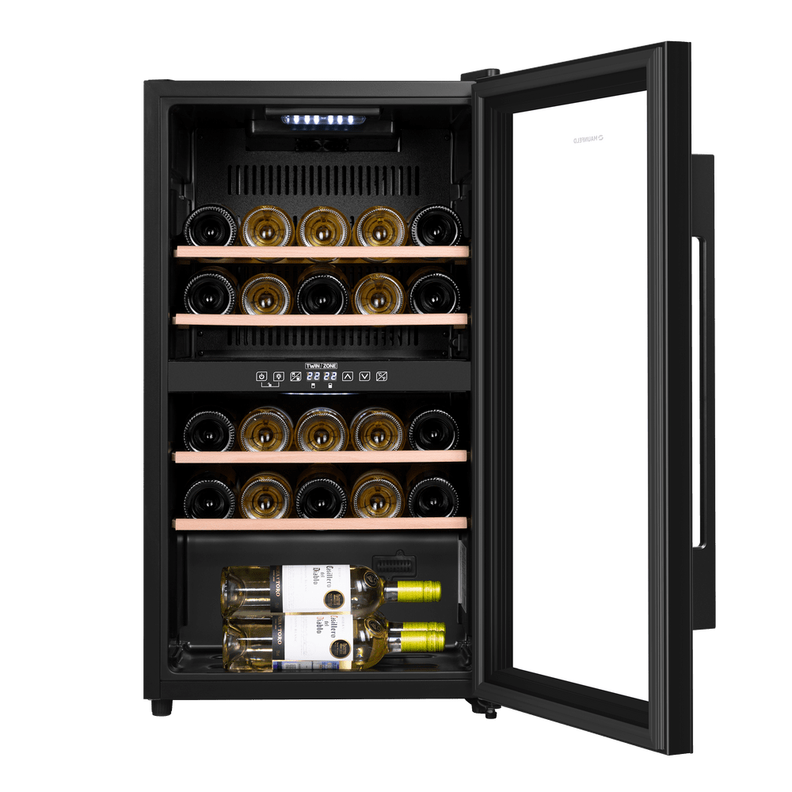

WineCellar.by
Винный шкаф MAUNFELD MFWC-85D28

Описание товара:
Современный винный шкаф MFWC-85D28 – инновационное решение проблемы качественного хранения вина.
Расширенная функциональность, изысканный дизайн, полноценная имитация условий «винного погреба» – всё это винный
шкаф MFWC-85D28.
В нем можно хранить до 28 бутылок при температуре от 5 ° C до 22 ° C. Напитки нужной температуры, всегда готовые
к подаче.
Преимущества винного шкафа
- вместительность до 28 бутылок;
- изысканный дизайн;
- равномерное охлаждение и качественная циркуляция воздуха;
- защита от УФ-излучения с помощью тонированного стекла;
- мягкая светодиодная подсветка;
- сенсорное управление;
- простая система настройки уровня температуры;
- 2 зоны с настраиваемой температурой;
Доставка: бесплатная доставка по Могилёву или по Беларуси от 30 руб до квартиры.
Характеристики товара:
- Цвет: чёрный
- Количество бутылок: 24
- Количество полок: 4
- Полезный объём холодильной камеры: 80л
- Регулировка температуры: 5 — 22 °C
- Материал полок: дерево
- Дверь: стеклопакет
- Вентилятор: есть
- Ширина/Глубина/Высова/Вес: 48 см/43 см/87 см/28.8 кг
Подробное описание товара:
Современный винный шкаф MFWC-85D28 – инновационное решение проблемы качественного хранения вина. Расширенная
функциональность, изысканный дизайн, полноценная имитация условий «винного погреба» – всё это винный шкаф
MFWC-85D28. В нем можно хранить до 28 бутылок при температуре от 5 ° C до 22 ° C. Напитки нужной температуры,
всегда готовые к подаче. Храните самые разнообразные сорта вин Широкий температурный диапазон винного шкафа (от
5 ° C до 22 ° C) позволит хранить красные, белые и игристые вина, а также подготавливать их к подаче. Винный
шкаф MFWC-85D28 в полной мере обеспечивает сохранность вина при правильной температуре, позволяет напитку
дозревать, раскрывая его вкус и аромат. Шкаф имеет две зоны, для каждой из них можно задать свой режим
охлаждения — это актуально для тех, кто планирует хранить дома разные виды напитка: красное, белое, шампанское.
Продуманное внутреннее пространство Внутреннее пространство рассчитано на хранение до 28 бутылок. При желании
можно извлечь полку и разместить большее количество бутылок. Для размещения винных бутылок, шкаф оснащен 4
крепкими полками из массива бука. Универсальный винный шкаф для любого интерьера Изысканный дизайн модели делает
её абсолютным выбором большинства: корпус выполнен из металла, окрашенной в чёрный цвет. Современная технология
освещения зоны позволит вам в любое время эффектно продемонстрировать вашу винную коллекцию гостям. Каждая
деталь модели гармонично дополняет друг друга, делая винный шкаф универсальным под любые стили интерьера. Дверца
шкафа выполнена из тонированного стекла с защитой от УФ лучей. Сенсорная панель управления Управляйте всеми
функциями винного шкафа с помощью интуитивно-понятной сенсорной панели управления одним касанием пальца.
Эффективная циркуляция воздуха Шкаф оснащён внутренним вентилятором для равномерного распределения холодного
воздуха ко всем полкам шкафа. Преимущества винного шкафа вместительность до 28 бутылок; изысканный дизайн;
равномерное охлаждение и качественная циркуляция воздуха; защита от УФ-излучения с помощью тонированного стекла;
мягкая светодиодная подсветка; сенсорное управление; простая система настройки уровня температуры 2 зоны с
настраиваемой температурой.
Цена: 1679 BYN
© "Все права защищены"